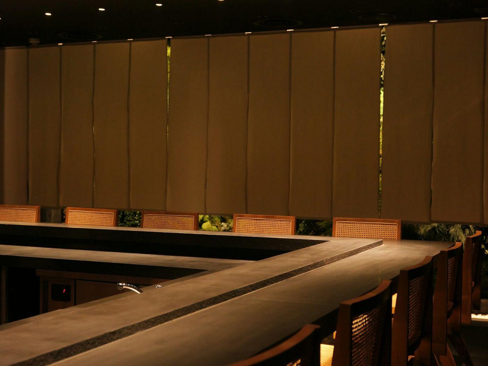

ただいま、って言いたくなる定食屋。
炊きたてのごはんと、毎朝とるおだしのお味噌汁。
本日
日替きょうの日替わり 鶏の照り焼き定食

まいにち通える、
ふつうのごはんAbout us
商店街のはずれにある、小さな定食屋です。
特別なごちそうではなく、毎日食べても飽きない「いつものごはん」を大切にしています。
ごはんのおかわりは無料。小鉢は日によって変わるので、何度来ても小さな発見があります。
お店のことを見る


ごはんと、お味噌汁と、季節の小鉢。
お品書きMenu
昼
11:00 – 15:00
ラストオーダーは14:30。おひとりでも入りやすいカウンター席があります。
夜
17:30 – 21:00
ラストオーダーは20:30。定食のほか、一品と瓶ビールもご用意しています。
定休日
水曜日
祝日は営業し、翌日にお休みします。お席はカウンター六席・テーブル十六席です。
営業のご案内Information
きょうの日替わりは、Instagramで。@komorebi_shokudo（見本）
Instagramを見る
- 日替わりのおかず
- 季節の小鉢
- 臨時休業のお知らせ